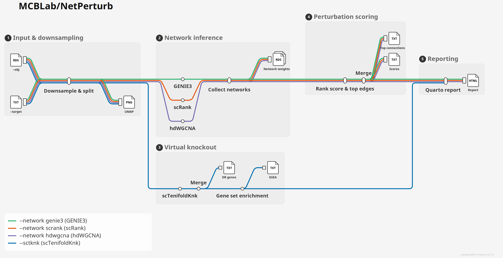

MCB Lab · Nextflow pipeline
NetPerturb¶
Gene regulatory network perturbation for single-cell RNA-seq: infer a network per cell identity, then ask which identities depend on a target gene, and what happens to the rest of the network when you knock it out.
Overview¶
MCBLab/NetPerturb takes a processed Seurat object and a list of target genes, and gives each cell identity (cell type, clone, cluster, condition) its own gene regulatory network. It answers two complementary questions about each target in each identity:
How much does it matter?¶
The scoring track (--network) builds a network with GENIE3, scRank or hdWGCNA and turns it into a scRank perturbation score: how much that identity's network leans on the target.
What does it move?¶
The knockout track (--sctknk) runs an in-silico knockout with scTenifoldKnk and returns the genome-wide table of differentially-regulated genes, optionally with gene set enrichment.
One report¶
Both tracks share downsampling and end in a single self-contained HTML report: tables, heatmaps, knockout networks, enrichment, QC and run provenance.
The pipeline is built with Nextflow DSL2 and runs every step in a container, so it is portable across laptops, workstations and HPC clusters, and every identity and target runs in parallel.
Pipeline summary¶

The three warm lines are the --network methods. They are mutually exclusive, so a run takes exactly one of them from the input object to the report. They share downsampling, scoring and reporting, and only diverge at network inference. The blue sctknk line is separate: --sctknk switches it on, and it runs alongside whichever --network line was chosen, or on its own.
- Downsampling and QC (
DOWNSAMPLE): splits the object by--column, randomly keeps up to--n_cellscells per identity and drops identities below--min_cells. It then checks every target gene against the retained cells and buildsgene4use, the gene set the networks are built on: highly variable genes, transcription factors, drug targets and the targets themselves. Before any of this, it removes mitochondrial and ribosomal protein genes from the object, so no network is built on them. - Network inference (
GENIE3,SCRANK,HDWGCNA): one regulatory network per identity with the method--networkselects. - Perturbation scoring (
RANK_SCORE): one task per target line. Each scores the target in every identity with scRank and records its strongest edges. - Consolidation (
MERGE): gathers every target's scores and connections into one table each. - In-silico knockout (
SCTENIFOLDKNK_BUILD,SCTENIFOLDKNK_KO): builds the wild-type network once per identity, then knocks out each target on it in parallel and scores every gene by how far the knockout moved it. - Gene set enrichment (
GSEA_SCTENIFOLDKNK): optional with--gsea_gmt. It ranks the knockout table and runs fgsea against your gene sets. - Report (
REPORT): a single portable Quarto HTML file that brings all of the above together.
See Usage for how to run each combination, and Output for what every file contains.
Quick start¶
- Install Nextflow (
>=22.10.1). - Install Singularity or Docker.
- Try the bundled test data, then run your own:
# Minimal test run (downloads a small AML object)
nextflow run MCBLab/NetPerturb -profile test,singularity --outdir test_results
# Your data: GENIE3 scores plus scTenifoldKnk knockouts, with enrichment
nextflow run MCBLab/NetPerturb \
-profile singularity \
--obj /path/to/seurat_object.rds \
--column cell_type \
--species human \
--target /path/to/targets.txt \
--network genie3 \
--sctknk \
--gsea_gmt /path/to/c5.go.bp.v2026.1.Hs.symbols.gmt \
--n_cells 1000 \
--n_cores 16 \
--outdir results
Where to start reading
The report at results/report/netperturb_report.html is designed to be the first thing you open. Everything it shows is also published as plain tab-separated tables for further analysis.
Credits¶
NetPerturb is developed and maintained by the Marques-Coelho Bioinformatics Lab (MCB Lab).
It stands on the shoulders of scRank, GENIE3, hdWGCNA, scTenifoldKnk, fgsea, Seurat, Quarto and Nextflow. Please cite them alongside NetPerturb.
Citation¶
A NetPerturb publication is in preparation. Until then, please cite the GitHub repository: github.com/MCBLab/NetPerturb.